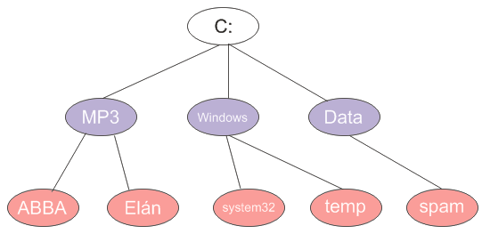

Úvod
V predošlom článku sme spomínali algoritmus prehľadávania do šírky, ktorý prechádzal strom ,,po vrstvách”. Okrem neho jestvuje ešte analogický algoritmus prehľadávania do hĺbky. Jeho základnou ideou je preskúmavanie ciest vedúcich k čo najhlbšiemu potomkovi daného uzla.
Pekným príkladom prehľadávania do hĺbky je traverzovanie súborového systému. Ak chceme prejsť všetky súbory v danom adresári a jeho podadresároch (a v podadresároch jeho podadresárov), takéto prehľadávanie sa nám veľmi hodí.
Zjednodušený súborový systém môže vyzerať nasledovne:

Výpis na konzolu by znamenal, že chceme vypísať niečo takéto:
C:
MP3
ABBA
Elán
Windows
System32
temp
Data
spam
Dátové štruktúry
V tomto prípade nebudeme definovať žiadnu špeciálnu triedu pre uzol, ale budeme pracovať rovno s objektami java.io.File. Tie totiž poskytujú možnosť vrátiť svoje deti (teda súbory a podadresáre), čo presne zodpovedá stromovej štruktúre.
Príklad použitia je nasledovný:
File fileC = new File("C:");
// vypíše súbory a adresáre v C:
File[] children = fileC.listFiles();
Algoritmy
Na vyriešenie tohto problému môžeme použiť dva varianty algoritmu: rekurzívnu verziu alebo klasickú verziu, v ktorej použijeme zásobník.
Rekurzívna verzia
Rekurzívna verzia algoritmu je založená na jednoduchom pozorovaní: na prezretie potomkov ľubovoľného uzla potrebujeme prejsť každé dieťa a prezrieť jeho potomkov. Každého potomka prezrieme tak, že vezmeme jeho priame deti a prezrieme ich atď atď. Takto sa vnárame až dovtedy, kým nedôjdeme na ,,spodok” stromu, teda k uzlom, ktoré už nemajú deti.
prejdi(U):
1. Vezmi uzol U a spracuj ho
2. Ak uzol nemá deti, skonči.
3. Inak na každom dieťati D zavolaj (rekurzívne) metódu prejdi(D)
Ukážme si to na príklade nášho stromu:
- Vezmime teda uzol
C:. Tento uzol spracujeme a postupne prejdeme jeho deti:MP3,WindowsaData.- Prvým dieťaťom je
MP3. Ten spracujeme a vezmeme jeho deti:ABBAaElán.- Na rade je
ABBA. Tá už nemá deti, čiže ju len vypíšeme. - Ďalším kandidátom je
Elán. Ten rovnako nemá deti a vypisujeme ho.
- Na rade je
- Ďalším čakajúcim je
Windows. Jeho deti súsystem32atemp.- Uzol
system32je bezdetný, čiže ho len vypíšeme. - Rovnakým prípadom je
temp, ktorý tiež len vypíšeme.
- Uzol
- Tretím dieťaťom
C:je uzolDatas jediným dieťaťom.spamvypíšeme a končíme, keďže sa už nemáme kam ,,vynoriť” - všetky uzly sú spracované.
- Prvým dieťaťom je
Rekurzívna verzia v Jave je potom priamym prepisom idey:
public static void traverse(File file) {
// spracujeme súbor
System.out.println(file);
if(file.isDirectory()) {
// prejdeme deti a spracujeme ich
for (File child : file.listFiles()) {
traverse(child);
}
}
}
Jediným vylepšením je overenie toho, či uzol má nejaké deti. Keďže v súborovom systéme majú deti len adresáre, do úvahy pri získavaní detí budeme brať len tie.
Pri návrhu rekurzívnych algoritmov je treba dať dôraz na to, aby sa rekurzia zastavila: teda aby sa volania metód, ktorá volajú samú seba „neodtrhli z reťaze“ a nevydali sa na nekonečný beh. Naša rekurzia je však korektná a zastaví sa ak narazíme na spodok stromu — teda buď na súbory (tie potomkov nemajú) alebo na prázdne adresáre. To je zahrnuté v podmienke, že či súbor je adresárom (isDirectory()).
Nerekurzívna verzia
Ak vás rekurzia straší, možno vám pomôže nerekurzívny variant. Spomeňme si na príklad prehľadávania do šírky. V ňom sme zobrali daný uzol, všetkých jeho potomkov zaradili do fronty a následne odbavovali ďalšie uzly čakajúce vo fronte. Prehľadávanie do hĺbky môžeme postaviť analogickým spôsobom, ibaže namiesto fronty (queue) použijeme zásobník (stack).
Zásobník možno vnímať ako obyčajný zoznam prvkov, kde pridávanie a odoberanie prvkov do zoznamu funguje tzv. „LIFO“ spôsobom — „last-in first-out“, čiže „posledný dnu-prvý von“. Predstaviť si ho môžeme ako štós tanierov, kde tanier možno položiť buď na vrchol kopy alebo ho z vrchu kopy odobrať. (Odoberať tanier z prostriedka nie je možné, lebo by sa taniere mohli rozbiť.) Typický zásobník má tieto operácie:
boolean empty()— zistí, či zásobník je prázdnypop()— odstráni objekt z vrchu zásobníka a vráti ho.push(Object item)— vloží objekt na vrchol zásobníka.
Podobne ako v prípade prehľadávania do šírky budeme prechádzať strom po jednotlivých uzloch. Pre každý uzol však môžeme vybaviť jeho súrodencov až vtedy, čo sú vybavení všetci jeho potomkovia (priami i nepriami). Potomkov uzla budeme ukladať na zásobník, z ktorého budeme zároveň vyberať uzly súce na vybavenie. Algoritmus sa skončí vo chvíli, keď je zásobník prázdny, teda že už nie je čo spracovávať.
Príklad algoritmu
Vezmime teda uzol C:. Tento uzol spracujeme a jeho deti MP3, Windows a Data vkladajme postupne na vrchol zásobníka. Pre poriadok budeme deti prechádzať v prevrátenom poradí (aby sa na vrchol zásobníka ukladali tie uzly, ktoré budeme spracovávať ako prvé).
+-----------------------
| Data | Windows | MP3
+-----------------------
Ďalej vezmeme prvok z vrcholu zásobníka, MP3, vybavíme ho (vypíšeme na konzolu) a všetky jeho deti vložíme na vrchol zásobníka.
+------------------------------
| Data | Windows | Elán | ABBA
+------------------------------
Z vrchola zásobníka vezmeme Abbu. Tá už nemá deti, čiže ju len spracujeme a pokračujeme ďalej.
+-----------------------
| Data | Windows | Elán
+-----------------------
Teraz vezmeme z vrchola zásobníka Elán. Ten tiež rovnako nemá deti, čiže ho spracujeme a pokračujeme ďalej.
+----------------
| Data | Windows
+----------------
Na vrchole zásobníka je Windows, ktorý má dvoch potomkov (system32 a temp). Hodíme ich postupne na vrchol zásobníka.
+------------------------
| Data | temp | system32
+------------------------
Oba uzly, system32 aj `temp sú bezdetné, teda ich len spracujeme.
+------
| Data
+------
Na rade je Data s jediným potomkom, spam, ktorý hodíme do (zhodou okolností prázdneho) zásobníka.
+------
| spam
+------
Spracovaním uzla spam končíme algoritmus, keďže zásobník je už prázdny.
Idea algoritmu
Idea algoritmu je potom nasledovná:
- vložme na vrchol zásobníka koreň stromu
- ak je zásobník prázdny, končíme
- inak vezmime z vrcholu zásobníka uzol a spracuj ho.
- vezmime jeho deti a dajme ho na vrchol zásobníka (v obrátenom poradí).
- pokračujme krokom 2.
Zásobník java.util.Stack
Zásobník je v Jave k dispozícii v podobe triedy java.util.Stack. Najdôležitejšie metódy boli zmienené vyššie.
Algoritmus v Jave s použitím zásobníka
// vytvoríme zásobník
Stack<File> zásobník = new Stack<File>();
// pridáme koreň do fronty
zásobník.push(root);
//pokiaľ fronta nie je prázdna
while(!zásobník.isEmpty()) {
// vyberme uzol z vrcholu zásobníka
File file = zásobník.pop();
// vybavme ho
System.out.println(file);
// potomkov zaradíme do fronty
if(file.isDirectory()) {
File[] children = file.listFiles();
// hádžeme na vrchol zásobníka v opačnom poradí
for(int i = children.length - 1; i >= 0; i--) {
zásobník.push(children[i]);
}
}
}Zabudovaný algoritmus v Jave
Trieda javax.swing.tree.DefaultMutableTreeNode má medzi svojimi metódami tiež prehľadávanie do hĺbky. Na koreňovom uzle stačí zavolať depthFirstEnumeration(), ktorá vráti enumeráciu uzlov.
Enumeration<DefaultMutableTreeNode> bfsEnum = root.depthFirstEnumeration();
while (bfsEnum.hasMoreElements()) {
DefaultMutableTreeNode treeNode = bfsEnum.nextElement();
System.out.println(treeNode.getUserObject());
}